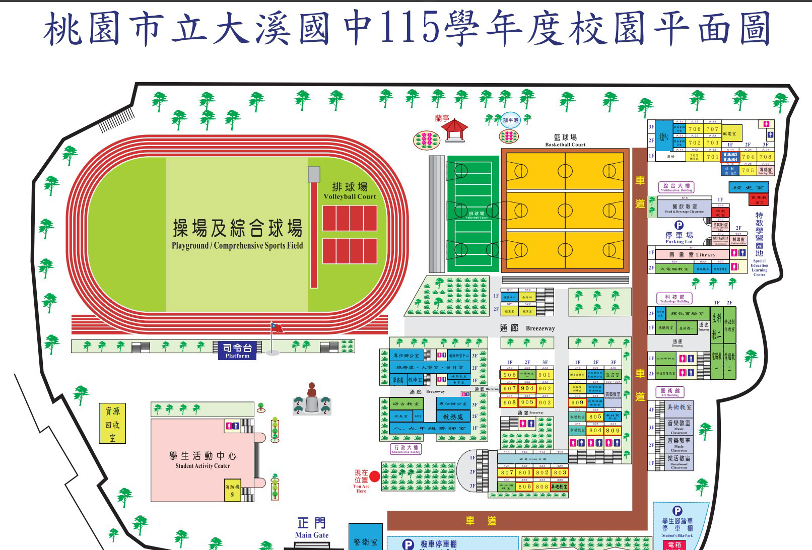

溪
桃園市立大溪國中
115 學年度・真實版 RPG 導覽
🔍
🗺️
總平面圖
📸
實景藝廊
🎆
校慶煙火
🧑🎓
換裝
🔊
音效
❓
說明
🏛️ 校長室 (前棟2F)
📚 教務處 (前棟2F)
🎖️ 學務處 (後棟1F)
💼 總務處 (後棟2F)
💬 輔導室 (特教2F)
🩺 健康中心 (北棟1F)
🎒 701 教室 (1F)
🎒 801 教室 (南棟2F)
🎒 901 教室 (西棟3F)
🪵 大溪木藝教室 (中棟1F)
📖 中央圖書室 (綜合棟1F)
🏀 學生活動中心禮堂
🏃 操場司令台
🏀 戶外雙籃球場
🏐 戶外排球場
🗿 蔣公銅像庭園
全
4F
3F
2F
1F
🚩 導航目的地
目標處室
路線規劃中...
0
m
🚶♂️ 自動帶路
✕
📜 校園任務進行中
日誌 ↗
【新生報到】校園初訪與處室巡禮
向正門警衛伯伯打招呼並領取手冊
圖上
全校
師長姓名
職稱
✕
對話內容載入中...
▲
◀
▶
▼
E
🗺️ 大溪國中 115 學年度官方校園平面圖對照
✕

依大溪國中 115 學年度官方平面圖校對，涵蓋 12 棟建築、92 間教室處室與體育運動場。
📸 大溪國中 實景照片與校園歷史藝廊
✕
📜 校園探索任務日誌 (Campus Quests)
✕
🧑🎓 學生造型外觀與操作偏好
✕
選擇學生外觀：
行走速度設定：
100%
按 Shift 鍵可隨時衝刺加速！
🎮 大溪國中 真實版 RPG 導覽操作指南
✕
⌨️
鍵盤操作
：
W
A
S
D
或方向鍵控制角色 8 方向移動，
Shift
衝刺跑步。
💬
互動與進門
：靠近師長、警衛或建築大門時，按
E
或
空白鍵
進行對話或進入建築室內！
🚶♂️
金色導航與自動帶路
：在上方搜尋欄輸入教室/處室名稱（如「701」、「教務處」），金色動態虛線路線將指引方向，點擊「自動帶路」即可自動前往。
🪜
跨樓層探索
：進入建築後可走訪走廊各間教室，走到樓梯間按
E
可漫遊 1F ~ 4F。
🗺️
總平面圖與實景
：按
M
可快速展開 115 官方校園平面圖，點「實景藝廊」可比對真實校舍歷史照片。
📱
手機觸控支援
：手機平版支援螢幕左下角虛擬十字鍵與右下角 E 互動按鈕。
我知道了！開始走進大溪國中